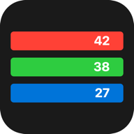

SCOREKEEPSupport
Found a bug, have an idea, or need a hand? Open a request and we'll get back to you.
Contact supportHow do I change a score faster?
Hold the plus or minus button to count quickly. To change the step size, tap the ±1 button at the bottom and pick 2, 5, 10, 25, 50 or 100.
I made a mistake. Can I undo it?
Yes. Tap Undo at the top of the screen, or shake your phone. A burst of taps on one player undoes in one step.
How do I rename, recolor, or delete a player?
Tap the pencil next to a name, or swipe the row to the right. Swipe left to delete.
How do I reorder players?
Touch and hold a player's name, then drag the row. The Sort button orders players by score: highest first, then lowest first, then back to your order.
The lowest score wins in my game. Does Scorekeep handle that?
Yes. Tap Sort until the lowest score is on top, then tap End. The player with the lowest score is crowned the winner.
How do I save a game?
Tap Game, give it a name, and choose Save & New Game. Open saved games from Game, then View Past Games. Tap a game to load it, or swipe left to delete it.
I don't hear any sounds.
Check that the speaker button at the bottom shows sound on and that your device isn't in silent mode. Scorekeep respects the silent switch.
Where is my data stored?
Only on your device. Scorekeep has no accounts and collects no data. See the privacy policy.